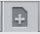

Roles, Accounts, Users, and Domains¶
Roles¶
A role represents a set of allowed functions. All CloudStack accounts have a role attached to them that enforce access rules on them to be allowed or disallowed to make an API request. Typically there are four default roles: root admin, resource admin, domain admin and user.
Accounts¶
An account typically represents a customer of the service provider or a department in a large organization. Multiple users can exist in an account.
Domains¶
Accounts are grouped by domains. Domains usually contain multiple accounts that have some logical relationship to each other and a set of delegated administrators with some authority over the domain and its subdomains. For example, a service provider with several resellers could create a domain for each reseller.
For each account created, the Cloud installation creates three different types of user accounts: root administrator, domain administrator, and user.
Users¶
Users are like aliases in the account. Users in the same account are not isolated from each other, but they are isolated from users in other accounts. Most installations need not surface the notion of users; they just have one user per account. The same user cannot belong to multiple accounts.
Username is unique in a domain across accounts in that domain. The same username can exist in other domains, including sub-domains. Domain name can repeat only if the full pathname from root is unique. For example, you can create root/d1, as well as root/foo/d1, and root/sales/d1.
Administrators are accounts with special privileges in the system. There may be multiple administrators in the system. Administrators can create or delete other administrators, and change the password for any user in the system.
Domain Administrators¶
Domain administrators can perform administrative operations for users who belong to that domain. Domain administrators do not have visibility into physical servers or other domains.
Root Administrator¶
Root administrators have complete access to the system, including managing templates, service offerings, customer care administrators, and domains
Resource Ownership¶
Resources belong to the account, not individual users in that account. For example, billing, resource limits, and so on are maintained by the account, not the users. A user can operate on any resource in the account provided the user has privileges for that operation. The privileges are determined by the role. A root administrator can change the ownership of any virtual machine from one account to any other account by using the assignVirtualMachine API. A domain or sub-domain administrator can do the same for VMs within the domain from one account to any other account in the domain or any of its sub-domains.
Using Dynamic Roles¶
In addition to the four default roles, the dynamic role-based API checker feature allows CloudStack root admins to create new roles with customized permissions. The allow/deny rules can be configured dynamically during runtime without restarting the management server(s).
For backward compatiblity, all roles resolve to one of the four role types: admin, resource admin, domain admin and user. A new role can be created using the roles tab in the UI and specifying a name, a role type and optionally a description.
Role specific rules can be configured through the rules tab on role specific details page. A rule is either an API name or a wildcard string that are one of allow or deny permission and optionally a description.
When a user makes an API request, the backend checks the requested API against configured rules (in the order the rules were configured) for the caller user-account’s role. It will iterate through the rules and would allow the API request if the API matches an allow rule, else if it matches a deny rule it would deny the request. Next, if the request API fails to match any of the configured rules it would allow if the requested API’s default authorized annotaions allow that user role type and finally deny the user API request if it fails to be explicitly allowed/denied by the role permission rules or the default API authorize annotations. Note: to avoid root admin being locked out of the system, all root admin accounts are allowed all APIs.
The dynamic-roles feature is enabled by default only for all new CloudStack installations since version 4.9.x.
After an upgrade, existing deployments can be migrated to use this feature by
running a migration tool by the CloudStack admin. The migration tool is located
at /usr/share/cloudstack-common/scripts/util/migrate-dynamicroles.py.
NOTE: If you have not changed your commands.properties file at any time, then it is recommended to use the -D (default) option as otherwise new API commands may not be added to the dynamic roles database.
During migration, this tool enables an internal flag in the database,
copies existing static role-based rules from provided commands.properties file
(typically at /etc/cloudstack/management/commands.properties) to the database
and renames the commands.properties file (typically to
/etc/cloudstack/management/commands.properties.deprecated). The migration
process does not require restarting the management server(s).
Usage: migrate-dynamicroles.py [options] [-h for help]
Options:
| -b DB | The name of the database, default: cloud |
| -u USER | User name a MySQL user with privileges on cloud database, default: cloud |
| -p PASSWORD | Password of a MySQL user with privileges on cloud database |
| -H HOST | Host or IP of the MySQL server |
| -P PORT | Host or IP of the MySQL server, default: 3306 |
| -f FILE | The commands.properties file, default: /etc/cloudstack/management/commands.properties |
| -d | Dry run and debug operations this tool will perform |
| -D | Use the default configuration for Dynamic Roles (does not import commands.properties) |
Example:
sudo python /usr/share/cloudstack-common/scripts/util/migrate-dynamicroles.py -u cloud -p cloud -H localhost -P 3306 -f /etc/cloudstack/management/commands.properties
sudo python /usr/share/cloudstack-common/scripts/util/migrate-dynamicroles.py -u cloud -p cloud -H localhost -P 3306 -D
If you’ve multiple management servers, remove or rename the commands.properties file on all management servers typically in /etc/cloudstack/management path, after running the migration tool for the first management server
Dedicating Resources to Accounts and Domains¶
The root administrator can dedicate resources to a specific domain or account that needs private infrastructure for additional security or performance guarantees. A zone, pod, cluster, or host can be reserved by the root administrator for a specific domain or account. Only users in that domain or its subdomain may use the infrastructure. For example, only users in a given domain can create guests in a zone dedicated to that domain.
There are several types of dedication available:
- Explicit dedication. A zone, pod, cluster, or host is dedicated to an account or domain by the root administrator during initial deployment and configuration.
- Strict implicit dedication. A host will not be shared across multiple accounts. For example, strict implicit dedication is useful for deployment of certain types of applications, such as desktops, where no host can be shared between different accounts without violating the desktop software’s terms of license.
- Preferred implicit dedication. The VM will be deployed in dedicated infrastructure if possible. Otherwise, the VM can be deployed in shared infrastructure.
How to Dedicate a Zone, Cluster, Pod, or Host to an Account or Domain¶
For explicit dedication: When deploying a new zone, pod, cluster, or host, the root administrator can click the Dedicated checkbox, then choose a domain or account to own the resource.
To explicitly dedicate an existing zone, pod, cluster, or host: log in as the root admin, find the resource in the UI, and click the Dedicate button. 
For implicit dedication: The administrator creates a compute service offering and in the Deployment Planner field, chooses ImplicitDedicationPlanner. Then in Planner Mode, the administrator specifies either Strict or Preferred, depending on whether it is permissible to allow some use of shared resources when dedicated resources are not available. Whenever a user creates a VM based on this service offering, it is allocated on one of the dedicated hosts.
How to Use Dedicated Hosts¶
To use an explicitly dedicated host, use the explicit-dedicated type of affinity group (see “Affinity Groups”). For example, when creating a new VM, an end user can choose to place it on dedicated infrastructure. This operation will succeed only if some infrastructure has already been assigned as dedicated to the user’s account or domain.
Behavior of Dedicated Hosts, Clusters, Pods, and Zones¶
The administrator can live migrate VMs away from dedicated hosts if desired, whether the destination is a host reserved for a different account/domain or a host that is shared (not dedicated to any particular account or domain). CloudStack will generate an alert, but the operation is allowed.
Dedicated hosts can be used in conjunction with host tags. If both a host tag and dedication are requested, the VM will be placed only on a host that meets both requirements. If there is no dedicated resource available to that user that also has the host tag requested by the user, then the VM will not deploy.
If you delete an account or domain, any hosts, clusters, pods, and zones that were dedicated to it are freed up. They will now be available to be shared by any account or domain, or the administrator may choose to re-dedicate them to a different account or domain.
System VMs and virtual routers affect the behavior of host dedication. System VMs and virtual routers are owned by the CloudStack system account, and they can be deployed on any host. They do not adhere to explicit dedication. The presence of system vms and virtual routers on a host makes it unsuitable for strict implicit dedication. The host can not be used for strict implicit dedication, because the host already has VMs of a specific account (the default system account). However, a host with system VMs or virtual routers can be used for preferred implicit dedication.
Using an LDAP Server for User Authentication¶
You can use an external LDAP server such as Microsoft Active Directory or ApacheDS to authenticate CloudStack end-users. CloudStack will search the external LDAP directory tree starting at a specified base directory and gets user info such as first name, last name, email and username.
Starting with CloudStack 4.11, an LDAP connection per domain can be defined. In this domain autosync per account can be configured, keeping the users in the domain up to date with their group membership in LDAP.
Note
A caveat with this is that ApacheDS does not yet support the virtual ‘memberOf’ attribute needed to check if a user moved to another account. Microsoft AD and OpenLDAP as well as OpenDJ do support this. It is a planned feature for ApacheDS that can be tracked in https://issues.apache.org/jira/browse/DIRSERVER-1844.
There are now three ways to link LDAP users to CloudStack users. These three ways where developed as extensions on top of each other.
To authenticate, in all three cases username and password entered by the user are used.
manual import. A user is explicitely mapped to a domain/account and created as a user in that account.
- CloudStack does a search for a user with the given username.
- If it exists, it checks if the user is enabled.
- If the user is enabled, CloudStack searches for it in LDAP
by the configured
ldap.username.attribute. - If the LDAP user is found, CloudStack does a bind request with the returned principal for that LDAP user and the entered password.
- The authentication result from LAP is honoured.
autoimport. A domain is configured to import any user if it does not yet exist in that domain. For these users a account by the same name as the user is created on the fly and the user is created in that account.
- If the domain is configured to be used with LDAP,
- CloudStack searches for it in LDAP by the configured
ldap.username.attribute. - If an LDAP user is found is found, CloudStack does a bind request with the returned principal for that LDAP user and the entered password.
- If LDAP authentication checks out, CloudStack checks if the
authenticated user exists in the domain it is trying to log
on to.
- If the user exists in CloudStack, it is ensured to be enabled
- If it doesn’t exist it is created in a new account with the username as names for both account and user.
- In case authentication fails the user will be disabled in
cloudstack after the configured
incorrect.login.attempts.allowednumber of attempts.
autosync. A domain is configured to use a LDAP server and in this domain a number of accounts are ‘mapped’ against LDAP groups. Any user that is in one of these configured accounts will be checked against the current state of LDAP and if they exist they will be asserted to be in the right account according to their LDAP group. If they do not exist in LDAP they will be disabled in CloudStack.
- If the domain is configured to be used by LDAP,
- CloudStack searches for it in LDAP by the configured
ldap.username.attribute. - If an LDAP user is found, it is checked for
memberships of mapped account, i.e. accounts for which LDAP
groups are configured.
- If the LDAP user has 0, 2 or more memberships the account is disabled and authentication fails.
- CloudStack then does a bind request with the returned principal for that LDAP user and the entered password.
- If no CloudStack user exists it is created in the appropriate account.
- If a CloudStack user exists but is not in the appropriate account its credentials will be moved.
To set up LDAP authentication in CloudStack, call the CloudStack API
command addLdapConfiguration and provide Hostname or IP address
and listening port of the LDAP server. Optionally a domain id can be
given for the domain for which this LDAP connection is valid. You could
configure multiple servers as well. These are expected to be
replicas. If one fails, the next one is used.
The following global configurations should also be configured (the default values are for openldap)
ldap.basedn: Sets the basedn for LDAP. Ex: OU=APAC,DC=company,DC=comldap.bind.principal,ldap.bind.password: DN and password for a user who can list all the users in the above basedn. Ex: CN=Administrator, OU=APAC, DC=company, DC=comldap.user.object: object type of users within LDAP. Defaults value is user for AD and interorgperson for openldap.ldap.email.attribute: email attribute within ldap for a user. Default value for AD and openldap is mail.ldap.firstname.attribute: firstname attribute within ldap for a user. Default value for AD and openldap is givenname.ldap.lastname.attribute: lastname attribute within ldap for a user. Default value for AD and openldap is sn.ldap.username.attribute: username attribute for a user within LDAP. Default value is SAMAccountName for AD and uid for openldap.
Restricting LDAP users to a group:¶
ldap.search.group.principle: this is optional and if set only users from this group are listed.
LDAP SSL:¶
If the LDAP server requires SSL, you need to enable the below configurations. Before enabling SSL for LDAP, you need to get the certificate which the LDAP server is using and add it to a trusted keystore. You will need to know the path to the keystore and the password.
ldap.truststore: truststore pathldap.truststore.password: truststore password
LDAP groups:¶
ldap.group.object: object type of groups within LDAP. Default value is group for AD and groupOfUniqueNames for openldap.ldap.group.user.uniquemember: attribute for uniquemembers within a group. Default value is member for AD and uniquemember for openldap.
Once configured, on Add Account page, you will see an “Add LDAP Account” button which opens a dialog and the selected users can be imported.
You could also use api commands: listLdapUsers, ldapCreateAccount and
importLdapUsers.
Once LDAP is enabled, the users will not be allowed to changed password directly in CloudStack.
Using a SAML 2.0 Identity Provider for User Authentication¶
You can use a SAML 2.0 Identity Provider with CloudStack for user
authentication. This will require enabling the SAML 2.0 service provider plugin
in CloudStack. To do that first, enable the SAML plugin by setting
saml2.enabled to true and restart management server.
Starting 4.5.2, the SAML plugin uses an authorization workflow where users should
be authorized by an admin using authorizeSamlSso API before those users can
use Single Sign On against a specific IDP. This can be done by ticking the enable
SAML Single Sign On checkbox and selecting a IDP when adding or importing users.
For existing users, admin can go to the user’s page and click on configure
SAML SSO option to enable/disable SSO for a user and select a Identity Provider.
A user can be authorized to authenticate against only one IDP.
The CloudStack service provider metadata is accessible using the
getSPMetadata API command, or from the URL
http://acs-server:8080/client/api?command=getSPMetadata where acs-server is the
domain name or IP address of the management server. The IDP administrator can
get the SP metadata from CloudStack and add it to their IDP server.
To start a SAML 2.0 Single Sign-On authentication, on the login page users need to
select the Identity Provider or Institution/Department they can authenticate with
and click on Login button. This action call the samlsso API command which
will redirect the user to the Identity Provider’s login page. Upon successful
authentication, the IdP will redirect the user to CloudStack. In case a user has
multiple user accounts with the same username (across domains) for the same
authorized IDP, that user would need to specify domainpath after selecting their
IDP server from the dropdown list. By default, users don’t need to specify any
domain path. After a user is successfully authenticated by an IDP server, the SAML
authentication plugin finds user accounts whose username match the username
attribute value returned by the SAML authentication response; it fails
only when it finds that there are multiple user accounts with the same user name
for the specific IDP otherwise the unique useraccount is allowed to proceed and
the user is logged into their account.
Limitations:
- The plugin uses a user attribute returned by the IDP server in the SAML response to find and map the authorized user in CloudStack. The default attribute is uid.
- The SAML authentication plugin supports HTTP-Redirect and HTTP-Post bindings.
- Tested with Shibboleth 2.4, SSOCircle, Microsoft ADFS, OneLogin, Feide OpenIDP, PingIdentity.
The following global configuration should be configured:
saml2.enabled: Indicates whether SAML SSO plugin is enabled or not true. Default is falsesaml2.sp.id: SAML2 Service Provider Identifier stringsaml2.idp.metadata.url: SAML2 Identity Provider Metadata XML Url or Filename. If a URL is not provided, it will look for a file in the config directory /etc/cloudstack/managementsaml2.default.idpid: The default IdP entity ID to use only in case of multiple IdPssaml2.sigalg: The algorithm to use to when signing a SAML request. Default is SHA1, allowed algorithms: SHA1, SHA256, SHA384, SHA512.saml2.redirect.url: The CloudStack UI url the SSO should redirected to when successful. Default is http://localhost:8080/clientsaml2.sp.org.name: SAML2 Service Provider Organization Namesaml2.sp.org.url: SAML2 Service Provider Organization URLsaml2.sp.contact.email: SAML2 Service Provider Contact Email Addresssaml2.sp.contact.person: SAML2 Service Provider Contact Person Namesaml2.sp.slo.url: SAML2 CloudStack Service Provider Single Log Out URLsaml2.sp.sso.url: SAML2 CloudStack Service Provider Single Sign On URLsaml2.user.attribute: Attribute name to be looked for in SAML response that will contain the username. Default is uidsaml2.timeout: SAML2 IDP Metadata refresh interval in seconds, minimum value is set to 300. Default is 1800